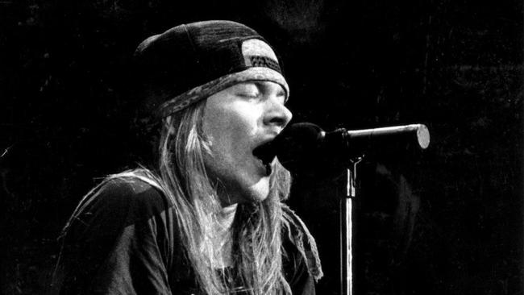
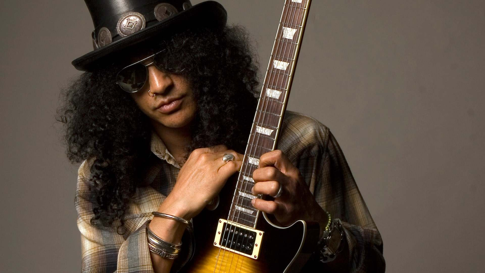
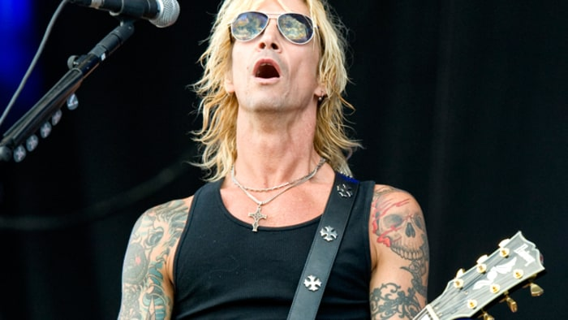
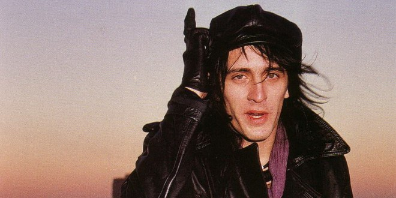
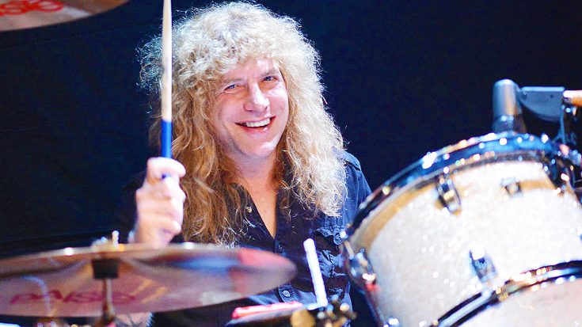
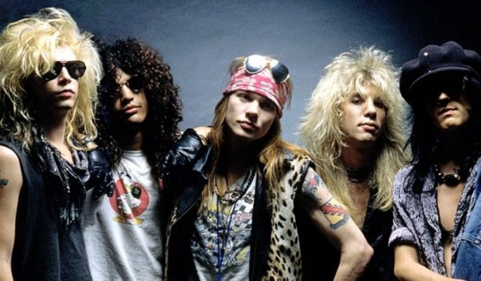

Original Members
The "classic" line-up of the hugely successful Guns n' Roses consisted of lead singer Axl Rose, lead guitarist Slash, rhythm guitarist Izzy Stradlin, bassist Duff McKagan, and drummer Steven Adler. GNR was made of a combination of two bands - LA Guns and Hollywood Rose - therefore creating the name Guns n' Roses. Izzy and Axl were childhood friends from the town of Lafayette, Indiana, and both went to the Sunset Strip in Los Angeles to pursue a career in music. Slash and Steven were also childhood friends, and played together in various bands, including Road Crew before joining GNR. Duff was a punk rocker honour student from Seattle, and also moved to LA to pursue a music career. Guns n' Roses went through many changes and struggles to become the band we know today.
Axl Rose
W. Axl Rose, born William Bruce Rose Jr. and raised William Bruce Bailey, was born on February 6, 1962 in the small town of Lafayette, Indiana. He is most known being the lead singer of Guns n' Roses, and has also been the only static member of the group since its formation. He is also the lead vocalist for AC/DC since 2016 due to health issues of former lead singer, Brian Johnson. He is praised for his unbelievable range and energy, earning him respect for one of the best vocalists of all time. Axl's mother was 16 years old when she had him, and his father was 20. His parents separated when he was 2 years old, and his mother remarried. Axl says his childhood was very oppressive, and his father was very strict and religious. Axl escaped all of this with music, as he sang in a choir since he was 5, and he studied piano. After discovering who his biological father was, he called himself W. Rose. Upon discovering this, he was arrested over 20 times. He then moved to Los Angeles in 1982 to begin a career in music.
Slash
Saul Hudson was born on July 23, 1965 in London, England, and is better known as his stage name, Slash. Aside from being the lead guitarist of Guns n' Roses, he has played in and formed many other bands, including Slash's Snakepit and Velvet Revolver, and has performed as a solo act. He has returned to Guns n' Roses as of 2016. Saul is both British and black, and was a "well-off" child, as both his parents had well paying jobs. He moved to Los Angeles when he was 5 years old, and his parents separated after a few years. He chose to live with his mom. While going with her to work, he met many stars, and gained the nickname "Slash" from actor Seymour Cassel. Slash started a band with Steven Adler, and he started out with the bass, but soon moved to guitar. He used to practice over 12 hours everyday. Saul's passion for rock music was when he first heard the album "Rocks" by Aerosmith at a girl's house. He said his life was changed that day.
Duff McKagan
Michael Andrew "Duff" McKagan was born on February 5, 1964 in Seattle, Washington. He is best known for being the bassist of Guns n' Roses. Duff rejoined Guns n' Roses along with Slash in 2016. Outside of Guns n' Roses, Duff played in many other bands, including Velvet Revolver and 10 Minute Warning, and has released a solo album. McKagan has also shown his skills as a writer. He has written columns for SeattleWeekly.com and Playboy.com. Though he dropped out of high school, he was an honour student, and left to pursue a career in music. Duff was born into a family of 8 children, and he was the youngest. Before moving to Los Angeles, Duff played in many punk bands as a bassist. After dropping out of high school, he worked as a pastry chef while earning his GED. When he moved to Los Angeles, he met future band mates Slash and Steven Adler in the band Road Crew.
Izzy Stradlin
Jeffrey Dean Isbell was born April 8, 1962 in Lafayette, Indiana, the same town as Axl Rose. He is best known as the rhythm guitarist of Guns n' Roses, but left in the height of their success in 1991. After leaving Guns n' Roses, he created his own rock band, Izzy Stradlin and the Ju Ju Hounds, and also released many solo albums. Izzy's parents divorced when he was 8. He said growing up in Lafayette was "pretty cool", and compared living there to the show, Beavis and Butthead. Izzy got into music when he was 8, and he liked acts such as Bob Dylan, Pink Floyd, Alice Cooper and Led Zeppelin. Izzy was in a band with Axl Rose in high school, and graduated with an average of D before moving to Los Angeles to pursue a career in music. In previous bands before Guns n' Roses, he played other instruments, starting with the drums, bass, before finally switching to rhythm guitar to help with songwriting.
Steven Adler
Steven Adler (born Michael Coletti) was born on January 22, 1965 in Cleveland, Ohio. He is best known for being the the drummer of Guns n' Roses. He was fired from the band in 1990 for his heavy heroin addiction. After his dismissal, he joined many more bands, including Adler, BulletBoys, and Road Crew. After his father left the family, he moved with his mother and siblings to Los Angeles. He was originally named for his father, but his name was changed because of a Jewish tradition, and his last name was changed after his stepfather's last name. Adler grew up in San Fernando Valley, but moved to live with his grandparents due to his bad behavior, and met Slash at his high school. Adler later formed the band Road Crew with Slash and Duff McKagan, but it was later disbanded due to his laziness and struggle to find a lead singer. Finally, he joined Guns n' Roses with previous band mates and Axl Rose and Izzy Stradlin.

From left to right - Duff McKagan, Slash, Axl Rose, Steven Adler, Izzy Stradlin